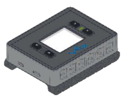
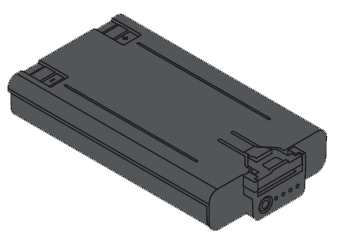
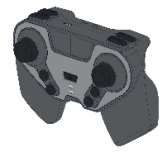
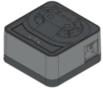

5.1 Resource Planning & Port Mapping
Before assembly, the team checked the Bill of Materials (BOM) based on our Chapter 4 design and planned the port mapping for the VEX IQ Brain.
Gen 1 Core Parts List (BOM)
| Category | Part Name | Qty | Photo |
|---|---|---|---|
| Electronics | Brain | 1 |  |
| Electronics | Smart Battery | 1 |  |
| Electronics | Controller | 1 |  |
| Electronics | Smart Motor | 6 |  |
| Pneumatics | Air Tank / Pump | 2 / 1 |  |
| Pneumatics | Solenoid / Cylinder | 2 / 2-3 |  |